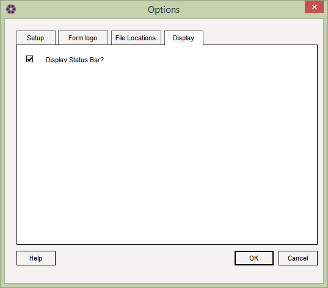

Options: Display tab |
The Options window allows users to configure NBS Contract Administrator to suit their preferences. To open the Options window select Tools > Options from the menu and select the Display tab.

Display Status bar
From this dialog the user can specify whether they would like to display the status
bar whilst using NBS Contract Administrator. The status bar displays
information about the subscription and online updating.
By default the status bar is turned on, though this can be turned off by simply deselecting the
check box on this dialog and then click on the OK button.
See also:
Options - Setup tab
Options - Form Logo tab
Options - File Locations tab